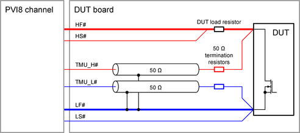

PVI8 TMU pogo pins
The PVI8 card provides a high-voltage time measurement unit (TMU) per channel. The TMU inputs are available on separate pogo pins. Some special design rules must be respected when connecting the TMU pins on the DUT board.
The TMU inputs require a proper DUT board design for accurate time measurements. The traces from the TMU input pogo pins to the DUT should be routed with a controlled impedance of 50 Ω. Series termination resistors of 50 Ω must be used at the DUT side of the traces.
TMU_L#
This pin is a high speed ground sense pin at the low side of the differential TMU input.
The pin supports a maximum voltage difference of ±5 V relative to the LF# pin of the channel and therefore must be connected to LF# and LS# as shown in the diagram below.
The pin should be connected via a trace with 50 Ω impedance. A series resistor of 50 Ω should be used at the DUT side of the line.
TMU_H#
TMU_H# is the high side pogo pin of the differential TMU input. The pin should be connected to HF# and HS# as shown in the diagram below.
The pin should be connected via a trace with 50 Ω impedance and a series resistor of 50 Ω must be used at the DUT side of the line.
Example

The diagram above shows an example DUT board design setup for time measurements at a low side switch.
Functional changes
- Introduced in SmarTest 7.3.1